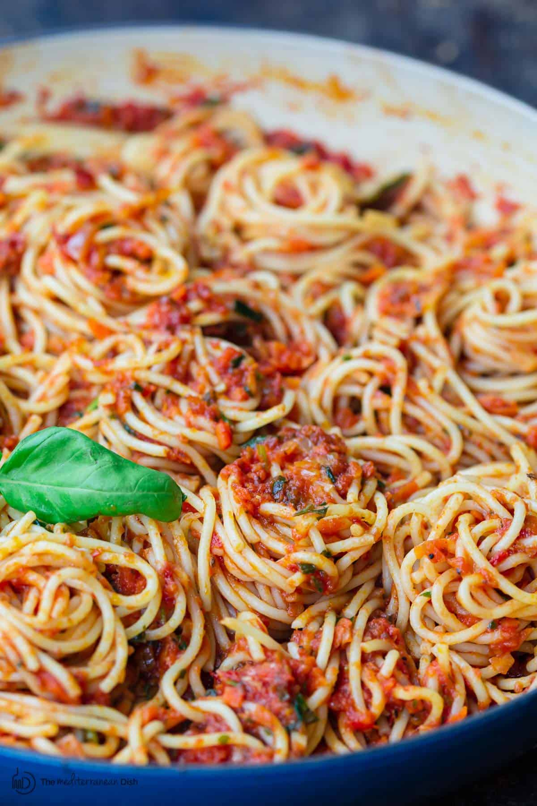
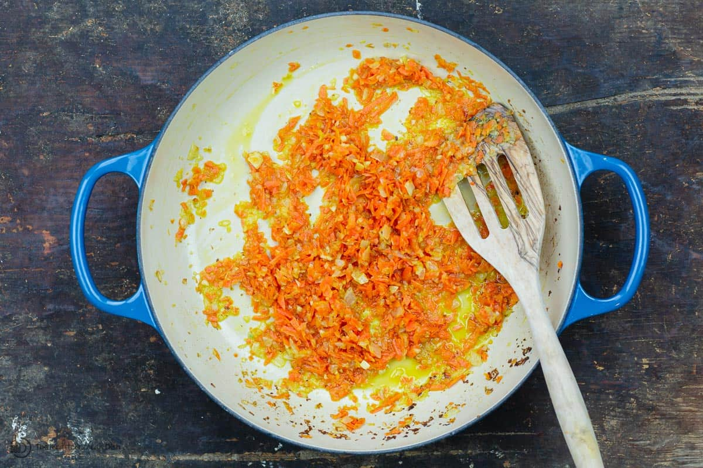

Spaghetti tomato sauce

Ingredients
- 1.Spaghetti
- 2.Extra virgin olive oil
- 3.Onions
- 4.Garlic
- 5.Seasoning
- 6.Canned Tomatoes
- 7.Fresh herbs
How to Make Spaghetti Sauce: Step-by-Step
- 1.Cook onions, garlic In a pot or braiser, add a couple tablespoons of extra virgin olive oil. Heat over
medium/medium-high until just shimmering. Add chopped onions, garlic.Cook, stirring regularly for 5 minutes
or so.

- 2.Add tomatoes, water, and seasoning
Now, add in crushed tomatoes and a little bit of water (about 1/2 cup). Season with kosher salt and black
pepper to your liking. Stir in dry oregano, paprika and fresh herbs (basil and parsley).
Bring this party to a boil briefly, then lower heat
- 3.Simmer till nice and ready!
Cover and let the sauce simmer for 15 to 20 minutes (I like to check on the sauce occasionally to give it a
stir or add a tiny bit of my cooking pasta water if needed).
You should end up with a gorgeous sauce that is the perfect thickness. Add a bit of fresh basil or parsley
if you have some left.

- 4.Add pasta & serve
If you’re after the best tasting pasta, add your just cooked pasta to the sauce and cook for another 5
minutes or so to allow the pasta to absorb the flavors and goodness of the sauce!
Need meat? Spaghetti meat sauce option
A meatless pasta sauce is super versatile, that’s why I make it more often. But it’s easy to turn this into a
hearty spaghetti meat sauce with very little effort.
You’ll need about 1 lb of ground meat of your choices (ground beef, chicken, turkey, or Italian sauce).